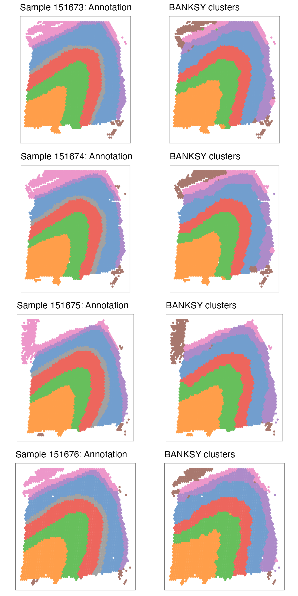
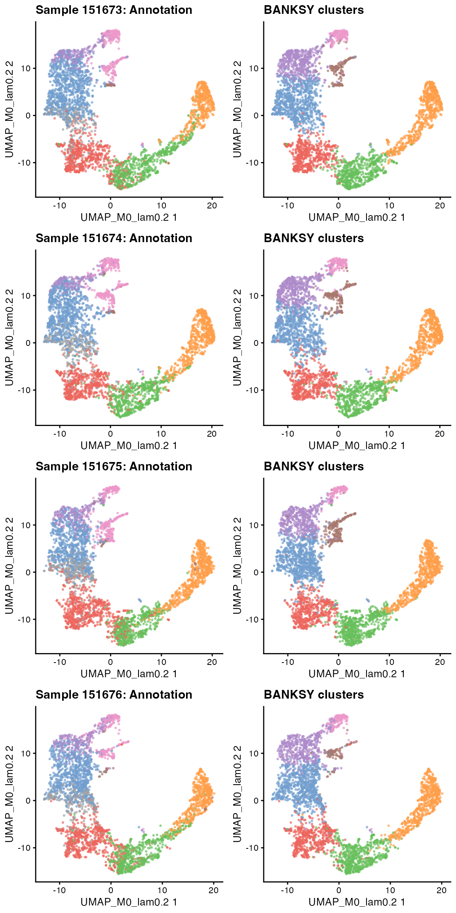

Here, we demonstrate BANKSY analysis on 10x Visium data of the human dorsolateral prefrontal cortex from Maynard et al (2018). The data comprise 12 samples obtained from 3 subjects, with manual annotation of the layers in each sample. We will focus on 4 of the 12 samples from subject 3, demonstrating multi-sample analysis with BANKSY.
library(Banksy)
library(SummarizedExperiment)
library(SpatialExperiment)
library(scater)
library(cowplot)
library(ggplot2)
library(ggspavis)We fetch the data for all 12 DLPFC samples with the spatialLIBD package. This might take awhile.
library(spatialLIBD)
library(ExperimentHub)
ehub <- ExperimentHub::ExperimentHub()
spe <- spatialLIBD::fetch_data(type = "spe", eh = ehub)After the download is completed, we trim the SpatialExperiment object, retaining only the counts and some metadata such as the sample identifier and pathology annotations. This saves some memory.
imgData(spe) <- NULL
assay(spe, "logcounts") <- NULL
reducedDims(spe) <- NULL
rowData(spe) <- NULL
colData(spe) <- DataFrame(
sample_id = spe$sample_id,
clust_annotation = factor(
addNA(spe$layer_guess_reordered_short),
exclude = NULL, labels = seq(8)
),
in_tissue = spe$in_tissue,
row.names = colnames(spe)
)
gc()Next, subset spe to samples from the last subject
(samples 151673, 151674, 151675,
151676). This stores each sample in its own
SpatialExperiment object, all placed in a list.
sample_names <- as.character(151673:151676)
spe_list <- lapply(sample_names, function(x) spe[, spe$sample_id == x])
rm(spe)
gc()Using the singleCellTK package, we perform basic normalisation of the data:
library(singleCellTK)
aname <- "normcounts"
spe_list <- lapply(spe_list, function(x) {
singleCellTK::runSeuratNormalizeData(
x,
useAssay = "counts",
normAssayName = aname,
normalizationMethod = "RC",
scaleFactor = 5000,
verbose = FALSE
)
})Next, select the top 2000 highly variable features from each sample, and take their union for downstream analysis:
To run BANKSY across multiple samples, we first compute the BANKSY
neighborhood feature matrices for each sample separately. We use
k_geom=6 corresponding to the first-order neighbors in 10x
Visium assays (k_geom=18 corresponding to first and
second-order neighbors may also be used).
compute_agf <- FALSE
k_geom <- 6
spe_list <- lapply(spe_list, computeBanksy, assay_name = aname, compute_agf = compute_agf, k_geom = k_geom)We then merge the samples to perform joint dimensional reduction and clustering:
When running multi-sample BANKSY PCA, the group argument
may be provided. This specifies the grouping variable for the cells or
spots across the samples. Features belonging to cells or spots
corresponding to each level of the grouping variable will be z-scaled
separately. In this case, sample_id in
colData(spe_joint) gives the grouping based on the sample
of origin.
lambda <- 0.2
use_agf <- FALSE
spe_joint <- runBanksyPCA(spe_joint, use_agf = use_agf, lambda = lambda, group = "sample_id", seed = 1000)Run UMAP on the BANKSY embedding:
spe_joint <- runBanksyUMAP(spe_joint, use_agf = use_agf, lambda = lambda, seed = 1000)Finally, obtain cluster labels for spots across all 4 samples.
res <- 0.6
spe_joint <- clusterBanksy(spe_joint, use_agf = use_agf, lambda = lambda, resolution = res, seed = 1000)
cnm <- sprintf("clust_M%s_lam%s_k50_res%s", as.numeric(use_agf), lambda, res)To compare clusters visually in the next section, run
connectClusters:
spe_joint <- connectClusters(spe_joint)Once joint clustering is performed, we split the samples into their
own SpatialExperiment objects:
spe_list <- lapply(sample_names, function(x) spe_joint[, spe_joint$sample_id == x])
rm(spe_joint)
gc()As an optional step, we smooth the cluster labels of each sample separately. This can be done if smooth spatial domains are expected in the biological sample or tissue in question.
We can compare BANKSY clusters to pathology annotations using several
cluster comparison measures such as the adjusted Rand index (ARI) or
normalized mutual information (NMI) with
compareClusters.
ari <- sapply(spe_list, function(x) as.numeric(tail(compareClusters(x, func = "ARI")[, 1], n = 1)))
ari
#> sample_151673 sample_151674 sample_151675 sample_151676
#> 0.582 0.667 0.641 0.606
nmi <- sapply(spe_list, function(x) as.numeric(tail(compareClusters(x, func = "NMI")[, 1], n = 1)))
nmi
#> sample_151673 sample_151674 sample_151675 sample_151676
#> 0.705 0.753 0.724 0.701Visualise pathology annotation and BANKSY cluster on spatial coordinates with the ggspavis package:
# Use scater:::.get_palette('tableau10medium')
pal <- c(
"#729ECE", "#FF9E4A", "#67BF5C", "#ED665D", "#AD8BC9",
"#A8786E", "#ED97CA", "#A2A2A2", "#CDCC5D", "#6DCCDA"
)
plot_bank <- lapply(spe_list, function(x) {
plotSpots(x, annotate = sprintf("%s_smooth", cnm), size = 0.8, palette = pal) +
theme(legend.position = "none") +
labs(title = "BANKSY clusters")
})
plot_anno <- lapply(spe_list, function(x) {
plotSpots(x, annotate = "clust_annotation", size = 0.8, palette = pal) +
theme(legend.position = "none") +
labs(title = sprintf("Sample %s: Annotation", x$sample_id[1]))
})
plot_list <- c(plot_anno, plot_bank)
plot_grid(plotlist = plot_list, ncol = 2, byrow = FALSE)
Visualize joint UMAPs for each sample:
umap_bank <- lapply(spe_list, function(x) {
plotReducedDim(x,
"UMAP_M0_lam0.2",
colour_by = sprintf("%s_smooth", cnm),
point_size = 0.5
) +
theme(legend.position = "none") +
labs(title = "BANKSY clusters")
})
umap_anno <- lapply(spe_list, function(x) {
plotReducedDim(x,
"UMAP_M0_lam0.2",
colour_by = "clust_annotation",
point_size = 0.5
) +
theme(legend.position = "none") +
labs(title = sprintf("Sample %s: Annotation", x$sample_id[1]))
})
umap_list <- c(umap_anno, umap_bank)
plot_grid(plotlist = umap_list, ncol = 2, byrow = FALSE)
sessionInfo()
#> R version 4.3.1 (2023-06-16)
#> Platform: aarch64-apple-darwin20 (64-bit)
#> Running under: macOS Ventura 13.3
#>
#> Matrix products: default
#> BLAS: /Library/Frameworks/R.framework/Versions/4.3-arm64/Resources/lib/libRblas.0.dylib
#> LAPACK: /Library/Frameworks/R.framework/Versions/4.3-arm64/Resources/lib/libRlapack.dylib; LAPACK version 3.11.0
#>
#> locale:
#> [1] en_US.UTF-8/en_US.UTF-8/en_US.UTF-8/C/en_US.UTF-8/en_US.UTF-8
#>
#> time zone: Europe/London
#> tzcode source: internal
#>
#> attached base packages:
#> [1] stats4 stats graphics grDevices utils datasets methods
#> [8] base
#>
#> other attached packages:
#> [1] ggspavis_1.6.0 cowplot_1.1.1
#> [3] scater_1.28.0 ggplot2_3.4.3
#> [5] scuttle_1.9.4 SpatialExperiment_1.10.0
#> [7] SingleCellExperiment_1.22.0 SummarizedExperiment_1.30.2
#> [9] Biobase_2.60.0 GenomicRanges_1.52.0
#> [11] GenomeInfoDb_1.36.3 IRanges_2.34.1
#> [13] S4Vectors_0.38.2 BiocGenerics_0.46.0
#> [15] MatrixGenerics_1.12.3 matrixStats_1.0.0
#> [17] Banksy_0.2.5
#>
#> loaded via a namespace (and not attached):
#> [1] bitops_1.0-7 gridExtra_2.3
#> [3] rlang_1.1.1 magrittr_2.0.3
#> [5] compiler_4.3.1 sccore_1.0.4
#> [7] DelayedMatrixStats_1.22.6 systemfonts_1.0.4
#> [9] vctrs_0.6.3 stringr_1.5.0
#> [11] pkgconfig_2.0.3 crayon_1.5.2
#> [13] fastmap_1.1.1 magick_2.8.0
#> [15] XVector_0.40.0 labeling_0.4.3
#> [17] utf8_1.2.3 rmarkdown_2.25
#> [19] ggbeeswarm_0.7.2 ragg_1.2.5
#> [21] purrr_1.0.2 xfun_0.40
#> [23] zlibbioc_1.46.0 cachem_1.0.8
#> [25] beachmat_2.16.0 jsonlite_1.8.7
#> [27] rhdf5filters_1.12.1 DelayedArray_0.26.7
#> [29] Rhdf5lib_1.22.1 BiocParallel_1.34.2
#> [31] irlba_2.3.5.1 parallel_4.3.1
#> [33] aricode_1.0.2 R6_2.5.1
#> [35] bslib_0.5.1 stringi_1.7.12
#> [37] limma_3.56.2 leidenAlg_1.1.2
#> [39] jquerylib_0.1.4 Rcpp_1.0.11
#> [41] knitr_1.44 R.utils_2.12.2
#> [43] Matrix_1.6-1.1 igraph_1.5.1
#> [45] tidyselect_1.2.0 viridis_0.6.4
#> [47] rstudioapi_0.15.0 abind_1.4-5
#> [49] yaml_2.3.7 codetools_0.2-19
#> [51] lattice_0.21-9 tibble_3.2.1
#> [53] withr_2.5.1 evaluate_0.22
#> [55] desc_1.4.2 pillar_1.9.0
#> [57] generics_0.1.3 dbscan_1.1-11
#> [59] rprojroot_2.0.3 RCurl_1.98-1.12
#> [61] sparseMatrixStats_1.12.2 munsell_0.5.0
#> [63] scales_1.2.1 glue_1.6.2
#> [65] tools_4.3.1 BiocNeighbors_1.18.0
#> [67] data.table_1.14.8 ScaledMatrix_1.8.1
#> [69] locfit_1.5-9.8 ggside_0.2.2
#> [71] fs_1.6.3 rhdf5_2.44.0
#> [73] grid_4.3.1 DropletUtils_1.20.0
#> [75] edgeR_3.42.4 colorspace_2.1-0
#> [77] GenomeInfoDbData_1.2.10 RcppHungarian_0.3
#> [79] beeswarm_0.4.0 BiocSingular_1.16.0
#> [81] HDF5Array_1.28.1 vipor_0.4.5
#> [83] cli_3.6.1 rsvd_1.0.5
#> [85] textshaping_0.3.6 fansi_1.0.4
#> [87] viridisLite_0.4.2 S4Arrays_1.0.6
#> [89] dplyr_1.1.3 uwot_0.1.16
#> [91] gtable_0.3.4 R.methodsS3_1.8.2
#> [93] sass_0.4.7 digest_0.6.33
#> [95] ggrepel_0.9.3 dqrng_0.3.1
#> [97] farver_2.1.1 rjson_0.2.21
#> [99] memoise_2.0.1 htmltools_0.5.6
#> [101] pkgdown_2.0.7 R.oo_1.25.0
#> [103] lifecycle_1.0.3